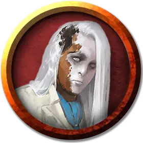

Чейнджлинг
Changeling
Средний Гуманоид (Чейнджлинг, Перевёртыш), любое мировоззрение

Класс Доспеха 13 (кожаный доспех)
Хиты 22 (4к8 + 4)
Скорость 30 футов
| мод | спас | ||
|---|---|---|---|
| СИЛ | 7 | −2 | −2 |
| ЛОВ | 15 | +2 | +2 |
| ТЕЛ | 12 | +1 | +1 |
| мод | спас | ||
|---|---|---|---|
| ИНТ | 14 | +2 | +2 |
| МДР | 10 | +0 | +0 |
| ХАР | 16 | +3 | +3 |
Навыки Акробатика +4, Восприятие +2, Обман +5, Проницательность +2, Убеждение +5
Чувства пассивное Восприятие 12
Языки Общий, Воровской жаргон, Дварфийский, Полуросликов, Эльфийский
Опасность 1/2 (100 опыта)
Бонус мастерства +2
Особенности
Изменение внешности. Чейнджлинг может использовать действие, для того что бы превратиться в Среднего гуманоида, которого он видел, или вернуться в свою истинную форму. Его характеристики, за исключением размера, одинаковы в каждой форме. Всё, что он несёт или носит, не изменяется. Он возвращается к своей истинной форме, если умирает.
Действия
Мультиатака. Чейнджлинг совершает две атаки кинжалом.
Кинжал. Рукопашная или дальнобойная атака оружием: +4 к попаданию, досягаемость 5 футов или дистанция 20/60 футов, одна цель. Попадание: 4 (1к4 + 2) колющего урона.
Тревожный лик (перезарядка после короткого или продолжительного отдыха). Каждое существо в радиусе 30 футов от чейнджлинга должно преуспеть в спасброске Мудрости Сл 13, иначе оно станет испуганным на одну минуту. Существо может повторять спасбросок в конце каждого своего хода, оканчивая на себе действие эффекта при успехе.
Описание
Чейнджлинг - это гуманоидная раса перевёртышей, которые скрывают свою истинную сущность за фальшивыми лицами. Их способности к мимикрии позволяют им появляться в качестве представителей любой гуманоидной культуры, играя гнома в один день и драконорождённого на следующий. Хотя чейнджлинги могут принимать любое обличье, большинство полагается на несколько известных личностей, каждая из которых имеет развитую историю и сеть друзей и знакомых.